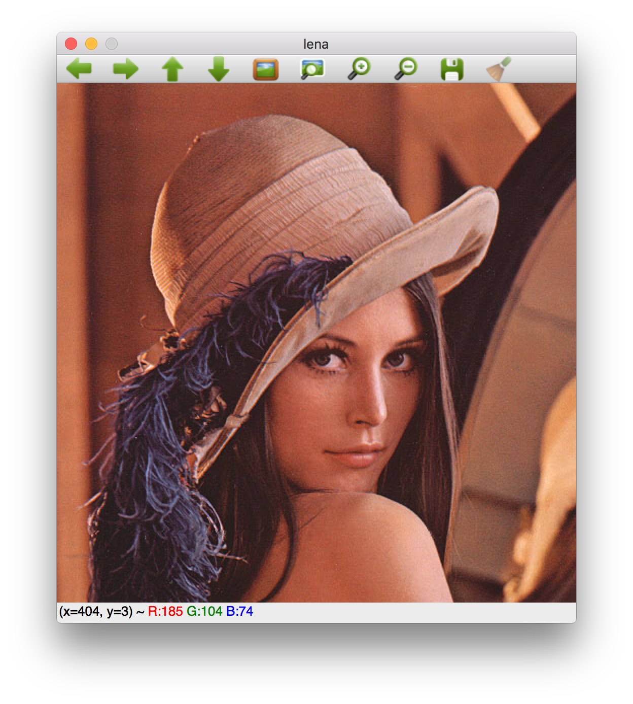

OpenCV.jl
The Julia wrapper for Open Source Computer Vision library (OpenCV)
https://github.com/JuliaOpenCV/OpenCV.jl
OpenCV — Module.The Julia wrapper for Open Source Computer Vision library (OpenCV).
A quick demo:
julia> using CVCore, CVImgCodecs, CVHighGUI
# Reading a image file into a Mat (equivalent to cv::Mat in C++)
julia> A = imread(Pkg.dir("OpenCV", "test", "lena.png"))
CVCore.Mat{UInt8,3}
[:, :, 1] =
0x4a 0x4f 0x4c 0x4b 0x50 0x50 … 0x37 0x37 0x36 0x37 0x37 0x37
0x4d 0x4e 0x4b 0x4d 0x52 0x4c 0x3a 0x3a 0x39 0x39 0x39 0x39
0x4e 0x4c 0x4d 0x4f 0x4b 0x4b 0x36 0x32 0x34 0x36 0x36 0x37
0x50 0x48 0x52 0x4e 0x4a 0x50 0x35 0x35 0x38 0x39 0x3a 0x37
0x52 0x46 0x56 0x4d 0x49 0x53 0x35 0x36 0x39 0x3b 0x3b 0x3a
0x52 0x49 0x53 0x4e 0x4a 0x50 … 0x37 0x34 0x37 0x3b 0x3d 0x3d
0x4e 0x51 0x4a 0x51 0x4d 0x47 0x39 0x36 0x38 0x3d 0x3d 0x3d
0x4c 0x52 0x46 0x50 0x4d 0x44 0x3a 0x3a 0x3e 0x3d 0x3a 0x38
0x4b 0x4d 0x48 0x4d 0x4a 0x47 0x39 0x3b 0x3b 0x3a 0x33 0x2e
⋮ ⋮ ⋱ ⋮
# You can convert it to a Julia array
julia> B = Array(A)
3×512×512 Array{UInt8,3}:
[:, :, 1] =
0x4a 0x4f 0x4c 0x4b 0x50 0x50 … 0x37 0x37 0x36 0x37 0x37 0x37
0x6f 0x74 0x71 0x6f 0x74 0x73 0x4e 0x4e 0x4d 0x4e 0x4e 0x4e
0xc1 0xc6 0xc3 0xc3 0xc8 0xc9 0x92 0x92 0x91 0x92 0x92 0x92
[:, :, 2] =
0x4d 0x4e 0x4b 0x4d 0x52 0x4c … 0x3a 0x3a 0x39 0x39 0x39 0x39
0x72 0x73 0x70 0x71 0x76 0x6f 0x51 0x51 0x50 0x50 0x50 0x50
0xc4 0xc5 0xc2 0xc5 0xca 0xc5 0x95 0x95 0x94 0x94 0x94 0x94
[:, :, 3] =
0x4e 0x4c 0x4d 0x4f 0x4b 0x4b … 0x36 0x32 0x34 0x36 0x36 0x37
0x73 0x6b 0x75 0x71 0x6d 0x73 0x4e 0x4c 0x4e 0x50 0x50 0x4f
0xc7 0xc0 0xc8 0xc5 0xc1 0xc6 0x90 0x92 0x94 0x96 0x93 0x91
# Show the image
julia> imshow("lena", A); waitKey(0) # you will see a GUI window
Dependencies (in short)
General API guidelines
Function names should be same between Julia and C++, except for appending
!(e.g.threshold!), which means the fuction does in-place operations.cv::Matin C++ are represented asMat{T,N}in Julia (see CVCore.jl for details).
Package structure
To simplify development and minimize dependencies, the Julia wrapper consists of the packages below:
following the opencv module structure except for the LibOpenCV.jl which manages binary dependencies (i.e. search installed OpenCV shared libraries or build and install them if not found).